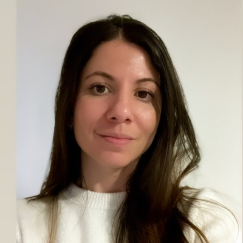

// 01
UI / UX

Andrea Corrales
Máster en Información Digital con énfasis en UI/UX
Universitat Pompeu Fabra
// quiénes somos
Creemos que para llevar a cabo la tarea de democratizar la inteligencia artificial, requerimos de más que tecnólogos encerrados en cámaras de eco. Por eso nuestro equipo está formado con expertos de varias áreas.
Somos un colectivo independiente dedicado a la creación de espacios de comunicación educativa, sobre el conocimiento y herramientas públicas de la inteligencia artificial, democratizando la tecnología y facultando a los costarricenses a cultivar el pensamiento crítico, potenciar sus oportunidades y ejercer sus derechos.
Ser una de las organizaciones líderes en el país respecto a la promoción y democratización de la educación y el acceso a la inteligencia artificial, sin fines de lucro y en pro de la sociedad costarricense.
Cómo trabajamos
// quiénes integramos el equipo